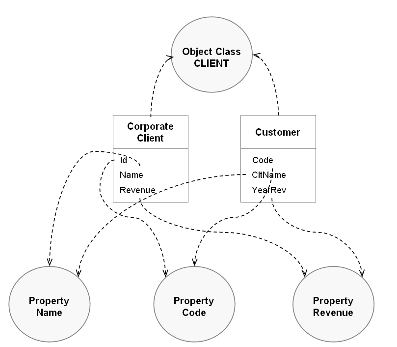

Semantic model
Semantic model
Data mapping configurations can be enriched by creating links from Tables and Fields to corresponding business concepts also known as Object Class and Property items. A single Object Class can be linked to many tables, and a Property can be linked to many fields. An Object Class is a container of data, predominantly a Table, but can include a group of fields or a complex data type. A property is a business abstraction of a table's field. This vocabulary comes from the ISO11179 standard also used in the TIBCO EBX® Information Governance Add-on.
The use of the semantic model is not mandatory to create data mapping configurations or to enable import, export and data transfer. Once the semantic model is configured, it facilitates the management of the data mapping configurations as follows:
Business data lineage.
Automatic data mapping.
Integration with the governance process.
Business data lineage
Data lineage shows a global view of how a data is transformed and conveyed between applications playing the roles of producers and consumers. When data lineage applies solely to the logical data model level, it is not easy to enforce a full understanding of the transformation. The following shows how two tables can have indirect data flow processes that cannot be figured out using just the logical level:
There are four tables: A, B, C and D. There is a data mapping from A to B and another mapping from C to D. Data lineage only recognizes two possible ways for data to flow A->B and C->D. But from a business point of view, table D and table A have similar significance. Even though a logical data mapping between A and D doesn't exist, the business data lineage must represent the global linking meaning between the four tables. It could be considered that there is a missing data mapping configuration between A and D.
In the following example, the CLIENT Object Class is linked to the Corporate Client, Customer, Party and Overseas Client tables. From this Object Class, it is easy to get a full data lineage applied to the business concept of Client, including the information that the table Overseas Client is not involved to feed the Customer table.

Special notation: | |
|---|---|
| In the current version of the add-on, it is possible to link the Tables and Fields with the Object Class and Properties items, but the UI to display the data lineage is not yet available. |
Automatic data mapping
The semantic model is also used to create automatic data mappings between tables and fields sharing the same Object Class and Property items or a part of them. As illustrated below, the two tables Corporate Client and Customer share the same CLIENT Object Class, meaning that they can be mapped with each other. The Id and Code fields are linked to the same Name Property, meaning that they can also be mapped with each other.
Based on this link between the data model Tables and Fields and the semantic model Object Classes and Properties, the add-on can automatically generate the data mapping configuration between source and target tables, such as, in the example below, the Corporate Client table and the target Customer table.

Note
Transferring between tables based on different models provides an example of a custom configuration that uses the semantic model to auto-generate mappings.
Integration with the governance process
In the EBX® Information Governance Add-on field, the EBX Information Governance Add-on allows you to manage all metadata of any data asset, such as: data models, workflow, rules, dataspaces, applications, etc. This add-on uses Object Class and Property items as concepts to arrange the metadata and govern their definitions.
It is also possible to declare the parties and their roles involved in each Object Class and Property. For instance, if the Sales application is referenced as the Consumer of the Client Object Class, it should be forbidden to declare this application as a source for an export process in the EBX® Data Exchange Add-on.